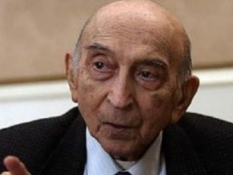
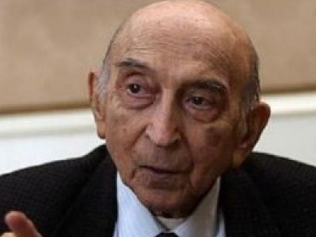
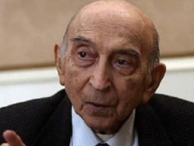

Photos
 

Professor
Lütfi Zadə 1921-ci ilin 4 fevral tarixində[7] Bakının Novxanı kəndində, Rəhim Ələsgərzadə (1895-1980) və yəhudi əsilli rus uşaq həkimi olan Feyqa (Fanya) Moiseyevna Koremanın (1897-1974) ailəsində dünyaya gəlib[8]. Lütfinin atası Rəhim Ələsgərzadə İranın Ərdəbil şəhərində ziyalı ailəsində dünyaya göz açıb. Birinci dünya müharibəsi illərində Ərdəbildən Bakıya köçüb və burada ticarətlə məşğul olmaq qərarına gəlib. İranda dostları və qohumları vasitəsilə külli-miqdarda kibrit alaraq onu Bakıya gətirib və kibrit satışını təşkil etməklə özünə yaxşı güzəran düzəldib. İşgüzar fəaliyyəti ilə yanaşı Azərbaycan Universitetinin Şərqşünaslıq fakültəsində təhsil alıb və İranda çap olunan həftəlik qəzetlərin Bakıdakı müxbiri kimi çalışıb. Bakıda gələcək həyat yoldaşı Fanya ilə tanış olub və valideynlərinin razılığı ilə onunla ailə qurub. Lütfi ilk təhsilinə Bakıdakı 16 saylı məktəbdə başlayıb.[9] Lakin 1932-ci ildə Sovet İttifaqının İran vətəndaşı olan azərbaycanlılarla bağlı qəbul etdiyi qərara görə, onlar iki yoldan birini seçməli idilər: ya Sovet Azərbaycanında qalıb buranın vətəndaşlığını qəbul etməli, ya da ölkəni dərhal tərk edib getməli idilər. Ələsgərzadələr ailəsi İrana geri qayıtmaq qərarına gəlir. Bir çoxları, xüsusilə də yaxın qohumları bu addımın gələcəkdə Lütfi Zadə fenomeninin formalaşmasında böyük rolu olduğunu qeyd edirlər. Çünki, o illərdə SSRİ-də kibernetika, informatika, genetika kimi elmlərə qarşı mənfi münasibət var idi və çətin ki, belə mühitdə Lütfi Zadə öz elmi ilə irəli gedə bilərdi. Beləcə, o 10 yaşında ikən ailəsi ilə birlikdə Bakını tərk edərək Tehrana köçüb. Balaca Lütfi o vaxt rusdilli məktəbin üçüncü sinfini bitirmişdi. Tehrana köçdükdən sonra təhsilini amerikalıların Albors missioner məktəbində davam etdirib. Bu məktəbdə o ilk dəfə olaraq Amerika elmi və mədəniyyəti haqqında məlumat əldə edib. Orada elmin inkişafı üçün yaradılmış şərait onu hələ məktəb illərindən Amerikaya çəkib. Orta təhsilini tamamladıqdan sonra o, Tehran Universitetinin Elektrik mühəndisliyi fakültəsinə daxil olub. Böyük alimin Amerika həyatı isə 1944-cü ildən başlayır. Tehran Universitetini böyük uğurla başa vurduqdan sonra o Amerika Birləşmiş Ştatlarına gəlib və təhsilini Massaçusets Texnologiya İnstitutunda davam etdirib. 1947-ci ildə valideynlərini də öz yanına gətirən alim artıq bu vaxt Kolumbiya Universitetində çalışırdı. O, 1948-ci ildə bu universitetdə elektron mühəndisliyi üzrə magistr, 1957-ci ildə isə professor dərəcəsi alıb. Həmin vaxt Lütfi Zadə məşhur alim, kibernetikanın atası hesab olunan Norbert Vinerin tövsiyəsi ilə Kaliforniyaya, bu ştatdakı Berkli Universitetinə gəlib. Burada ilk vaxtlar bir qədər çətinliklər çəkən alim sonralar şəraitə uyğunlaşıb və ömrünün sonuna qədər də Berkli Universitetinin professoru olaraq qalıb. Lütfi Zadə 6 sentyabr 2017-ci ildə ABŞ-ın Kaliforniya ştatında yerli vaxt ilə səhər saat 7:30-da 96 yaşında dünyasını dəyişmişdir.[10][11] Alim sağlığında Bakıda dəfn olunmasını vəsiyyət etmişdir. Bir sıra səbəblərdən alimin nəşinin doğma vətəninə gətirilməsi yubanmışdır. Nəhayət, 28 sentyabrda cənazə San-Fransiskodan Bakıya yola salınmış və 29 sentyabr saat 03 radələrində Bakıya çatdırılmışdır.[12] Həmin gün alimlə AMEA-da vida mərasimi keçirildi. Mərasimdə prezident İlham Əliyev başda olmaqla dövlət və hökumət rəsmiləri, elm və mədəniyyət xadimləri iştirak etdi. Lütfi Zadənin yaxın qohumu, xalq artisti Cənnət Səlimova nümayəndə qismində çıxış etdi. Dünya şöhrətli alim I Fəxri Xiyabanda torpağa tapşırıldı

Bu gün dünya elminə Lütfi Zadənin 6 mühüm nəzəriyyəsi məlumdur. Hazırda onlar elm və istehsalatda geniş şəkildə tətbiq olunur. Ona dünya şöhrəti qazandıran, onun dünya elmində inqilab hesab olunan qeyri-səlis məntiq nəzəriyyəsidir. Bu nəzəriyyə riyaziyyatın əsası olan ikili çoxluq anlayışına yeni ifadə vermişdir: qeyri-səlis çoxluq. Elmdə qeyri-səlis ölçünün daxil edilməsi təbiətdə və cəmiyyətdə gedən proseslərin qeyri-müəyyənliyini daha adekvat nəzərə almağa imkan yaradır. Aparıcı dünya şirkətləri tərəfindən tətbiq olunan bu nəzəriyyə 1965-ci ildə işlənib hazırlanmışdır. Nəzəriyyə uzun müddət Amerika elmi ictimaiyyəti tərəfindən qəbul edilməsə də, ötən əsrin 80-ci illərində yapon alimlərinin diqqətini cəlb etmiş və yaponlar bu unikal nəzəriyyədən yararlanmaq qərarına gəlmişlər. Lütfi Zadə nəzəriyyəsinin tətbiqi gündoğan ölkəyə milyardlar qazandırmışdır. Bu gün Yaponiyanın "Mitsubishi", "Toshiba", "Sony", "Canon", "Sanyo", "Nissan", "Honda" və digər nüfuzlu şirkətləri qeyri-səlis məntiq nəzəriyyəsinə əsaslanan foto və videokameralar, paltaryuyan maşınlar, vakum kimyəvi təmizləyiciləri istehsalında, avtomobillərin, qatarların, sənaye proseslərinin idarə olunmasında geniş istifadə edirlər. Lütfi Zadə 1989-cu ildə qeyri-səlis məntiq nəzəriyyəsinin sənayedəki uğurlarına Yaponiyanın elm adamlarına verdiyi ən yüksək mükafat – "Honda" mükafatı ilə təltif olunub. Amerikalılar da bu nəzəriyyənin qiymətini anlamağa, ondan yararlanmağa başlayıblar. Bu gün bu nəzəriyyə Amerikanın "General Motors", "General Electric", "Motorola", "Dupont", "Kodak" və başqa şirkətləri tərəfindən istehsalatda geniş tətbiq olunur. Hazırda bu nəzəriyyədən iqtisadiyyatda, psixologiyada, linqvistikada, siyasətdə, fəlsəfədə, sosiologiyada, dini məsələlərdə, münaqişə problemlərində də istifadə olunur. Qeyri-səlis məntiq nəzəriyyəsindən əlavə Lütfi Zadə 5 fundamental elmi nəzəriyyə təklif etmişdir: "təəssüratlar nəzəriyyəsi", "sistemlər nəzəriyyəsi", "sözlə işləyən kompüter nəzəriyyəsi", "optimal süzgəclər nəzəriyyəsi" və "soft kompyutinq". Lütfi Zadənin elmdə Z-çevirmə kimi tanınan işi diskret və rəqəmli idarəetmə, informasiya və kommunikasiya sistemlərinin yaradılmasının əsasını qoymuş elmi nəzəriyyədir. Onun məşhur vəziyyətlər fəzası, dinamik sistemlərin idarə olunma və müşahidə olunma nəzəriyyələri müasir idarəetmə elminin əsasını təşkil edir. ABŞ-ın Milli Kosmik Tədqiqatlar Mərkəzi (NASA) bu nəzəriyyələr əsasında idarəetmə sistemlərini tədqiq edir, layihələndirir və tətbiq edir. Lütfi Zadənin qeyri-səlis məntiqini obrazlı şəkildə belə izah etmək olar: "Aristotel məntiqi" ilə mühakimə yürüdən beyin dünyanı yalnız ağ və ya qara rəngdə qavrayır, "Zadə məntiqi" isə dünyanı bütün çalarları ilə qavramağa imkan verir. Çünki, "Aristotel məntiqi" ikili (binar) məntiqdir, "Zadə məntiqi" çoxmənalı (kəsilməz qiymətli) məntiqdir. Aristotelə görə, bir müddəa ya doğru, ya da yalan ola bilər. Lütfi Zadəyə görə, hər bir müddəanın doğruluq dərəcəsi doğru və ya yalan arasında (və ya sıfırla bir arasında) kəsilməz qiymətlər alır. "Zadə məntiqi"ndə real həyatı daha dürüst inikas etmək qabiliyyəti var, bu məntiqdə tolerantlıq daha çoxdur. Düz 20 il Amerika elmi ictimaiyyəti tərəfindən qəbul edilməyən qeyri-səlis məntiq nəzəriyyəsi, nəhayət, 1980-ci illərdə yapon alimləri tərəfindən böyük maraqla qarşılanmışdır. Beləliklə, bu nəzəriyyə riyaziyyatın, kibernetikanın, informatika və hesablama texnologiyasının inkişafı tarixində yeni bir dövr açmışdır. Bu nəzəriyyə bütün dünyada elmə, texnika və texnologiyaya geniş nüfuz etmişdir. Paltaryuyan maşınlardan tutmuş, avtomat sürücüyə kimi yüzlərlə, minlərlə sistemdə, qurğuda öz tətbiqini tapmışdır. Getdikcə həmin nəzəriyyənin əməli gücü onun mücərrəd mahiyyətini üstələmişdir.[14] 2013-cü ilin 19-20 iyun tarixlərində Madrid şəhərində İspaniyanın BBVA (Banco Bilbao Vizcaya Argentaria, S.A.) fondunun elm və mədəniyyət sahəsi üzrə təsis etdiyi mükafatların təqdimetmə mərasimi keçirilib. Fond tərəfindən İnformasiya-Kommunikasiya Texnologiyaları kateqoriyasında Lütfi Zadə 400 min avro dəyərində mükafata layiq görülüb.[15] 2016-cı ildə Lütfi Zadənin nəzəriyyəsi əsasında yapon alimləri tərəfindən ilk dəfə olaraq süni-intellektə malik robot hazırlanıb Alter adlı robot Tokiodakı Beynəlxalq Elm Muzeyində sərgilənib.